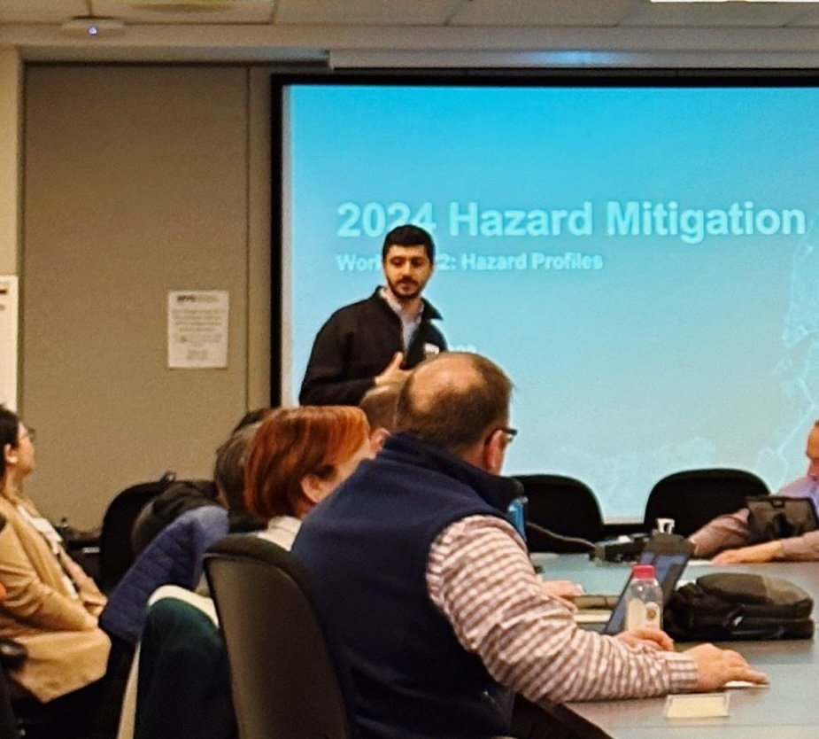

Allen Shaibani is an urban planner and civil servant based in New York City. His work spans planning, analysis, and operations, coordinating across agencies, managing teams, and moving policy from development through implementation inside large and complex government systems.
His past roles include: NYC Taxi and Limousine Commission, Gehl Institute, AIA New York Center for Architecture, and Eparque Urban Strategies.
Contact
Get in touch on LinkedIn.